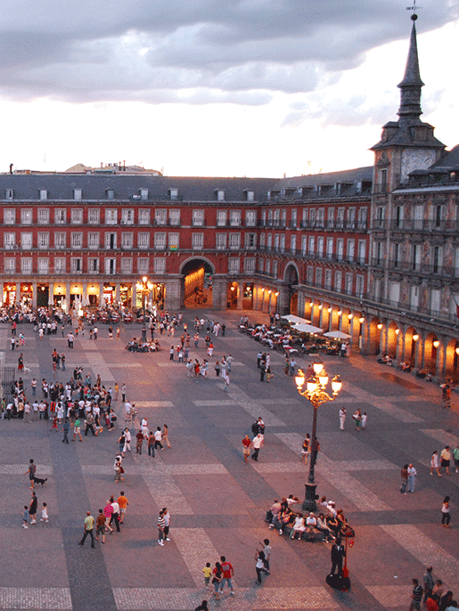
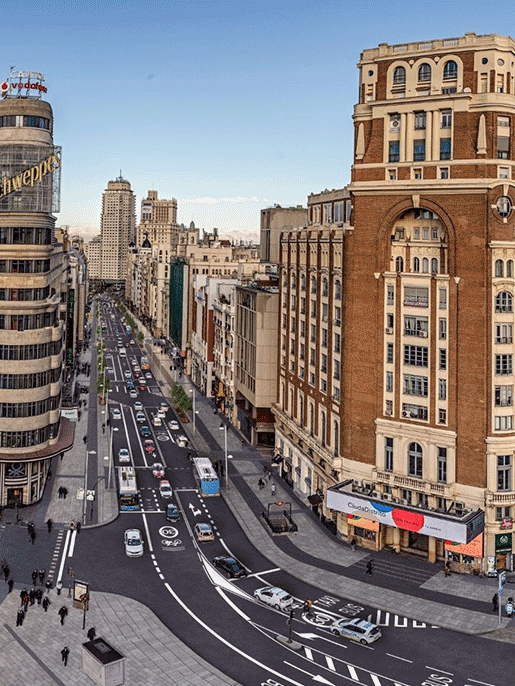
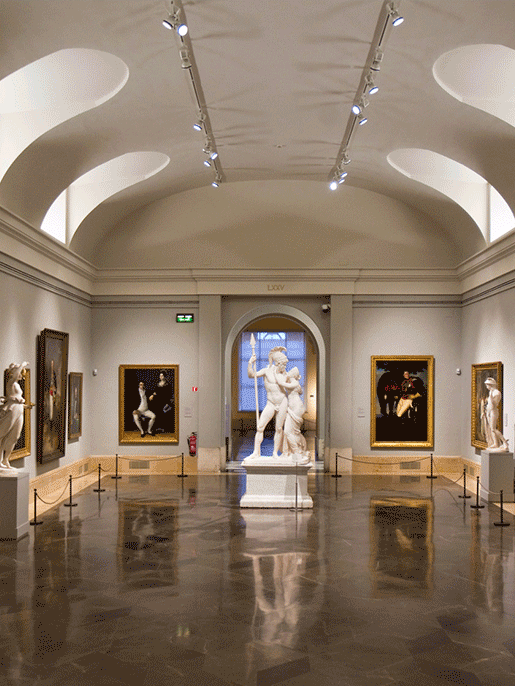
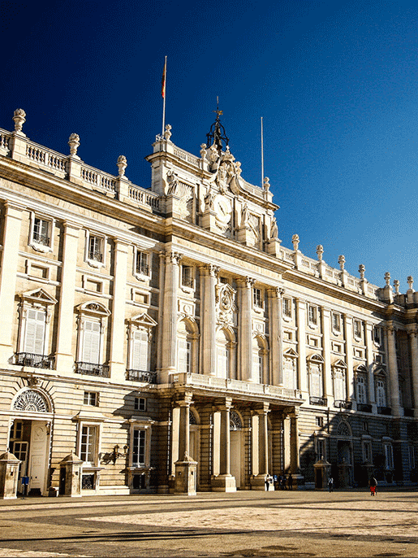

La Plaza Mayor tiene 129 metros de largo por 94 metros de ancho. La rodean 237 balcones y, en el centro, está la estatua del rey Felipe III. Abundan las tiendas de recuerdos y los bares de tapa en esta plaza, que durante la primavera y verano montan mesitas afuera. Esta actividad es gratuita, para todas las edades y se ubica en Plaza Mayor 28012.

Gran Vía

Caminando por la calle Preciados, el eje comercial más caro de Madrid, llegamos a la Gran Vía. Una hermosa avenida que nació en 1910 y es la arteria emblemática de la ciudad, con algunos de los edificios más hermosos de Europa, y rincones con historia como el Museo Chicote, donde Ernest Hemingway escribía sus crónicas de la Guerra Civil Española. Esta actividad es gratuita, para todas las edades y se ubica donde comienza la calle de Alcalá y termina en la plaza de España.
Museo del Prado
Por su patrimonio artístico es uno de los cinco grandes museos del mundo. Se necesitan varios días para apreciarlo en su totalidad. Por eso, si la visita es corta, lo conveniente es centrarse en algunas de sus obras maestras, como 'Las Meninas' de Velázquez, 'La Maja vestida' y 'La Maja desnuda' de Goya, 'El Jardín de las delicias' de El Bosco y 'El Caballero de la mano en el pecho' de El Greco. Esta actividad sale unos 15 euros aproximadamente, para todas las edades y se ubica en Calle de Ruiz de Alarcón, 23.

Palacio Real

Con el metro se puede llegar a la estación Ópera, desde allí, atravesando la Plaza de Oriente, se encuentra el Palacio Real, residencia oficial de los reyes, aunque ya no viven en este edificio. En el interior alberga una gran colección artística, también se conservan tapices, porcelanas, mobiliario y objetos de plata de la Armeria Real. Esta actividad sale unos 6,50 euros aproximadamente, para todas las edades y se ubica en Calle de Bailén, s/n.
Parque del Retiro
Disfrute de un paseo al aire libre en este antiguo parque con mas de 15.000 árboles, además de monumentos históricos como el Palacio de Cristal y rincones para descansar. Destacan además, la estatua de El Ángel caído; única escultura en el mundo que representa al diablo, y la fuente de los Galápagos que conmemora el nacimiento de Isabel II. Esta actividad es gratuita, para todas las edades y se ubica en Plaza de la Independencia, 7, 28001.